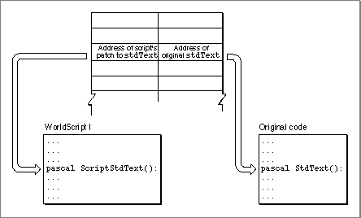
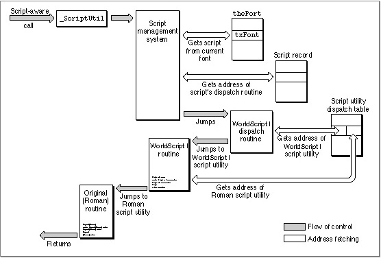
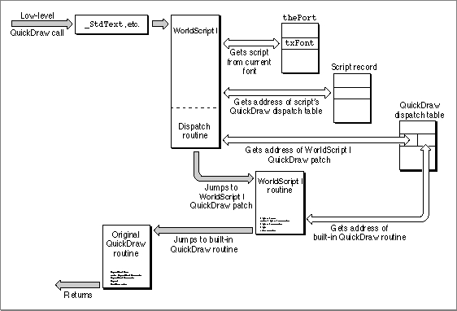

Legacy Document
Important: The information in this document is obsolete and should not be used for new development.
Important: The information in this document is obsolete and should not be used for new development.


How Calls Are Dispatched
In every script system that is compatible with WorldScript I, the dispatch-table element for every script utility and QuickDraw patch consists of two pointers: one to the WorldScript I implementation of the routine and one to the original routine. In all cases, the WorldScript I routine executes first. In some cases, WorldScript I calls the original routine after its own; in other cases, the pointer to the original routine isNILand the WorldScript I routine is all that executes. See Figure A-2. This design allows you to place a patched routine so that it executes either before, in place of, or after the WorldScript I routine and allows you to either call the original routine or not call it.Figure A-2 Dispatch table entry for script utilities and QuickDraw patches
 Every script-aware call to system software that executes as a script utility goes through the
_ScriptUtiltrap ($A8B5). The script management system handles some of those calls, such asGetSMVariable, itself; other calls, such asDrawJustified, it passes to a script system through the script system's script record. Those calls are listed in Table A-11 on page A-26. The script system uses its script utility dispatch table to call the right script utility. See Figure A-3.When it receives a script utility call, a script's dispatch routine does the following:
Figure A-3 How calls are dispatched to the 1-byte script utilities
- It checks to see if the call (as defined by the script utility selector) is within the range of routines handled by the script.
- It gets the address of the script utility from the script's dispatch table, using the script utility selector.
- It replaces the selector on the stack with the address of its own script record.
- It jumps into the WorldScript I routine obtained in step 2. As the routine executes, it obtains script-specific characteristics from the script record passed to it in step 3.
- The WorldScript I routine gets the address of the original (Roman) routine from the dispatch table and, if it is not
NIL, jumps to that routine upon completion.
 A patched low-level QuickDraw call follows a similar path, except that it goes through a QuickDraw trap that has been patched to execute code in WorldScript I instead of passing through the script management system. After determining which script should handle this call (by examining the current font), WorldScript I uses the script's QuickDraw dispatch table to jump to the proper routine. See Figure A-4.
Figure A-4 How calls are dispatched to the 1-byte QuickDraw patches
